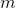
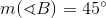
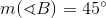
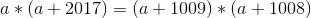

Bacalaureat Matematică 2017 | Pedagogic | Model de subiect
Subiectul I
Rezolvare:
- Arătați că pentru orice număr real , unde
 , .
, .
Rezolvare:
Rezolvare:
Determinăm rădăcinile ecuației de gradul II:
.
Rezolvare:
Prima scumpire este din lei, adică:
.
Prețul după prima scumpire va fi
.
A doua scumpire este din noul preț, adică din lei:
.
Prețul după a doua scumpire va fi:
.
Prețul după cele două scumpiri succesive este de lei.
- În reperul cartezian
 se consideră punctele și . Determinaţi distanţa de la punctul
se consideră punctele și . Determinaţi distanţa de la punctul  la punctul
la punctul  , unde este simetricul punctului
, unde este simetricul punctului  față de punctul
față de punctul  .
.
Rezolvare:

Știm că  este simetricul punctului
este simetricul punctului  față de punctul , deci el va fi situat pe dreapta
față de punctul , deci el va fi situat pe dreapta  astfel încât, dacă îndoim pagina în punctul , punctele și se suprapun.
astfel încât, dacă îndoim pagina în punctul , punctele și se suprapun.
Deci va fi situat  unități mai jos de punctul , pe dreapta .
unități mai jos de punctul , pe dreapta .
Prin urmare, , așa cum se poate observa și pe graficul de mai sus.
Distanța de la punctul la punctul este .
- Calculaţi aria triunghiului
 , ştiind că  şi .
, ştiind că  şi .
Rezolvare:

Observăm că triunghiul este isoscel: .
Prin urmare, .
Cum suma unghiurilor interioare unui triunghi este , iar suma unghiurilor și este , rezultă că măsura unghiului va fi .
Deci, este dreptunghic isoscel.
Prin urmare:
.
Subiectul II
Rezolvare:
.
Rezolvare:
.
Atunci:

Din relațiile și  rezultă că
rezultă că
,
adică legea de compoziție „ ” este asociativă.
- Demonstrați că , pentru orice număr real
 .
.
Rezolvare:
Avem că:
.
Atunci:
sau
- Determinaţi numărul real
 , știind că .
, știind că .
Rezolvare:
Notăm , cu .
Obținem următoarea ecuație de gradul II:
.
Determinăm rădăcinile ecuației, după care revenim în substituția făcută:
Rezultă:
Revenind în substituție, avem pentru prima soluție:
.
Verificăm cealaltă soluție și obținem:
- Determinați cel mai mare număr natural
 , pentru care .
, pentru care .
Rezolvare:
.
Rezolvare:
![\begin{align*} &\dfrac{2}{3-\sqrt{5}}*\dfrac{2}{3+\sqrt{5}}=\\ \\&=\dfrac{2}{3-\sqrt{5}}+\dfrac{2}{3+\sqrt{5}}-2017\\ \\&=\dfrac{2\left(3+\sqrt{5} \right )}{\left(3-\sqrt{5} \right )\left(3+\sqrt{5} \right )}+\dfrac{2\left(3-\sqrt{5} \right )}{\left(3-\sqrt{5} \right )\left(3+\sqrt{5} \right )}-2017\\ \\&=\dfrac{6+2\sqrt{5}}{3^2-\left(\sqrt{5} \right )^2}+\dfrac{6-2\sqrt{5}}{3^2-\left(\sqrt{5} \right )^2}-2017\\ \\&=\dfrac{6+2\sqrt{5}}{9-5}+\dfrac{6-2\sqrt{5}}{9-5}-2017\\ \\&=\dfrac{6+2\sqrt{5}}{4}+\dfrac{6-2\sqrt{5}}{4}-2017\\ \\&=\dfrac{6+2\sqrt{5}+6-2\sqrt{5}}{4}-2017\\ \\&=\dfrac{12}{4}-2017\\ \\&=3-2017\\ \\&=-2014\in\mathbb{Z} \end{align*}](../../../../media/webbooks/826/6618/images/equations/dcxqgqriax_inwxkirdjqq==.svg)
Subiectul III
Se consideră matricele și  .
.
- Calculați
 .
.
Rezolvare:
.
- Demonstrați că inversa matricei este matricea .
Rezolvare:
Cum (a fost caculat la subpunctul anterior), rezultă că este o matrice inversabilă, unde:
Determinăm elementele adjunctei :
.
Obținem astfel că:

Rezolvare:
![\begin{align*} &A\cdot A-3A=\\ \\&=\begin{pmatrix} 1 & 2\\ 2&2 \end{pmatrix}\cdot\begin{pmatrix} 1 & 2\\ 2& 2 \end{pmatrix}-3\cdot\begin{pmatrix} 1 &2 \\ 2& 2 \end{pmatrix}\\ \\&=\begin{pmatrix} 1\cdot1+2\cdot2 & 1\cdot2+2\cdot2\\ 2\cdot1+2\cdot2 & 2\cdot2+2\cdot2 \end{pmatrix}-\begin{pmatrix} 3\cdot1 &3\cdot2 \\ 3\cdot2 & 3\cdot2 \end{pmatrix}\\ \\&=\begin{pmatrix} 1+4 & 2+4\\ 2+4& 4+4 \end{pmatrix}-\begin{pmatrix} 3 & 6\\ 6& 6 \end{pmatrix}\\ \\&=\begin{pmatrix} 5 & 6\\ 6 & 8 \end{pmatrix}-\begin{pmatrix} 3 & 6\\ 6& 6 \end{pmatrix}\\ \\&=\begin{pmatrix} 5-3 & 6-6\\ 6-6 & 8-6 \end{pmatrix}\\ \\&=\begin{pmatrix} 2 &0 \\ 0& 2 \end{pmatrix}\\ \\&=2\cdot\begin{pmatrix} 1 & 0\\ 0 & 1 \end{pmatrix}\\ \\&=2\cdot I_2 \end{align*}](../../../../media/webbooks/826/6618/images/equations/q2gzvmlha5d9g1s8j6oqsa==.svg)
- Determinaţi numerele reale , știind că .
Rezolvare:
.
Atunci:


- Determinaţi numărul real , știind că .
Rezolvare:
.
Din enunț avem că .
Deci , .
Rezultă că .
- Determinați numerele reale
 și
și  , pentru care , unde .
, pentru care , unde .
Rezolvare:
![\begin{align*} &AX=XA\\ \\&\Leftrightarrow \begin{pmatrix} 1 &2 \\ 2& 2 \end{pmatrix}\cdot\begin{pmatrix} 2 & 1\\ p& q \end{pmatrix}=\begin{pmatrix} 2 & 1\\ p& q \end{pmatrix}\cdot\begin{pmatrix} 1 &2 \\ 2& 2 \end{pmatrix}\\ \\&\Leftrightarrow \begin{pmatrix} 1\cdot2+2\cdot p & 1\cdot1+2\cdot q\\ 2\cdot2+2\cdot p & 2\cdot1+2\cdot q \end{pmatrix}=\begin{pmatrix} 2\cdot1+1\cdot2 & 2\cdot2+1\cdot2\\ p\cdot1+q\cdot2 & p\cdot2+q\cdot2 \end{pmatrix}\\ \\&\Leftrightarrow \begin{pmatrix} 2+2p & 1+2q\\ 4+2p& 2+2q \end{pmatrix}=\begin{pmatrix} 4 & 6\\ p+2q & 2p+2q \end{pmatrix} \end{align*}](../../../../media/webbooks/826/6618/images/equations/q3kpqthbdpurtmya49rssw==.svg)
Se obține următorul sistem:

Pentru și avem .